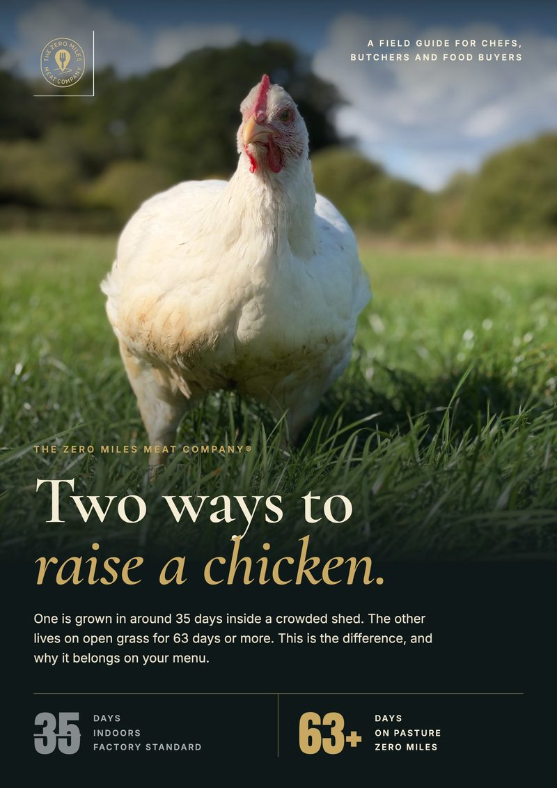
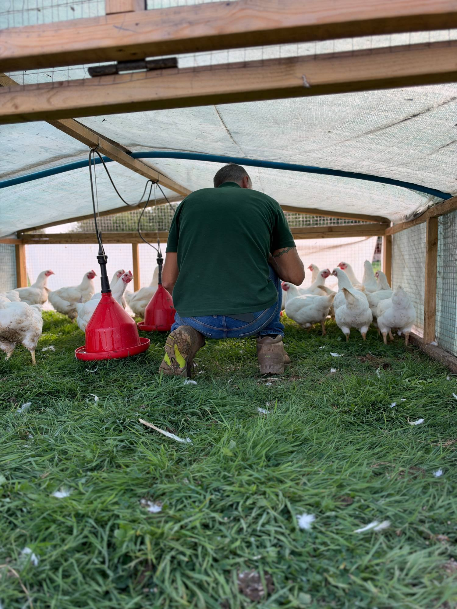

One is grown in around 35 days inside a crowded shed. The other lives on open grass for 63 days or more. This is the difference, and why it belongs on your menu.

Campaigners call them Frankenchickens. Bred so that breast meat outpaces the heart and legs carrying it, most UK meat chickens reach slaughter weight in around five weeks, under artificial light, on the same litter they hatched onto.
chickens eaten in the UK come from fast-growing breeds.1
rise in growth rate since the 1950s.2
chickens, mostly fast-growing, die prematurely on UK farms every week.3
more likely to be treated with antibiotics than other breeds.4
Sources: 1 RSPCA. 2 Project Slingshot, Ban Frankenchickens campaign. 3 The Humane League UK, State of the Chicken Industry report, 2024. 4 Alliance to Save Our Antibiotics, reported by the i, 2025.
| Measure | Factory broiler | Zero Miles bird |
|---|---|---|
| Breed | Fast-growing commercial strains | Hubbard 787 and 757, slower-growing breeds on the Better Chicken Commitment list |
| Age at slaughter | Around 35 days | 63 days minimum, up to 12 weeks |
| Home | Enclosed, artificially lit shed | No barns. Mobile tractors on open pasture |
| Flock size | Tens of thousands per shed | 60 birds per tractor |
| Ground | The same litter for life | Fresh grass every single day |
| Antibiotics | Fast-growing breeds are five times more likely to be treated | None. Any treated bird leaves the stock |
| Slaughter | Trucked to a central plant | On the farm where it was raised |
| To your door | A national supply chain | A named farm in your region |
No barns, no sheds, no house to come back to. After a short start in the brooder, our birds live outdoors in small mobile shelters, pecking, scratching and foraging as chickens should.
birds per tractor. Small enough that every bird is seen, every day.
moves onto clean ground. Each 3.6m × 3m tractor is pulled a length forward.
minimum rest before the same grass is grazed again.
in a heated brooder on hemp bedding, then straight out to pasture.
UV shade cover overhead, with electric anti-fox wire around every tractor.
antibiotics. Vaccinated, vet-planned, and any treated bird is removed from stock.
The centralised chain
The Zero Miles way

Most UK poultry passes through large, centralised plants before it reaches a plate. We turned that around. Zero Miles equips independent farmers with a purpose-built processing unit on their own land, one rearing standard and full training. Each farm serves its own protected territory.
Poultry is the one species UK law allows to be processed on the farm where it was raised, which is what makes this possible. UK small abattoirs are closing at around 10% a year (FSA); on-farm processing keeps local meat possible. Read our position paper for the bigger picture.
Every bird comes from a named farm, a known flock and a dated batch. Tell your guests exactly where dinner was raised.
Nine weeks or more on grass builds the firmer texture and deeper flavour that a five-week bird simply has not had time to develop.
Raised, processed and supplied within your region. Fewer miles, fresher meat, and money kept in the rural economy.
Slower-growing breeds, small flocks, daily moves and no antibiotics. Standards that stand up to the questions guests now ask.
Supply follows the grass. Pasture-raised birds are seasonal, so talk to us early about volumes and regular orders.
Tell us a little about your business and we'll email you the full six-page guide straight away. We'll also follow up about your supply: what you need, how often, and where you're based.
Prefer to talk it through? Call 020 8720 9265.